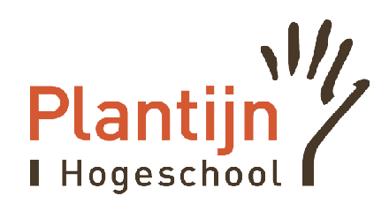

| --- 2008: vakantiewerk bij Beltech
| --- 2010: vakantiewerk bij Beltech,
| --------- Afgestudeerd - Elektromechanica (secundair onderwijs)
| --- 2011: vakantiewerk bij Beltech
| --- 2013: Afgestudeerd aan Plantijn Hogeschool Boom - Elektromechanica, klimatisatie
| --------- Siemens Building Technologies NV (tot juni 2019)
| --- 2019: Maes BVBA (tot december 2019)
| --- 2020: DAF Trucks
| --- 2024: Zelfstandige in bijberoep
| --- heden
|
\/
In dit bedrijf werden drukbestendige slangen en leidingen geproduceerd voor diverse toepassingen. Het volledige productieproces vond in-house plaats, van het bewerken van de slangen tot het vlechten van de metalen mantels. Mijn verantwoordelijkheden omvatten het controleren van de gevlochten slangen op defecten en het verwijderen van eventuele gebreken. Vervolgens voerde ik metingen en wegingen uit van de verschillende slangstukken. Het afgewerkte product werd vervolgens naar het naastgelegen bedrijf gebracht, waar de koppelingen werden geperst en desgewenst een coating op de slangen werd aangebracht. Tijdens rustigere periodes assisteerde ik bij het onderhoud van de vlechtmachines, waar mijn taken voornamelijk bestonden uit het reinigen van de machines en het monteren van nieuwe onderdelen.
Deze vakantiebaan heb ik gedurende elke zomer uitgevoerd, met uitzondering van 2009, toen de financiële crisis verhinderde dat ik daar aan de slag kon. Door de grote hoeveelheid technisch werklozen in dat jaar was het niet mogelijk om vakantiewerk uit te oefenen.
Tijdens mijn secundair onderwijs heb ik ervoor gekozen om de richting Elektromechanica te volgen. Deze keuze was niet alleen gebaseerd op mijn interesse in de technische en mechanische aspecten van het vak, maar ook op de aanzienlijke werkzekerheid die het diploma op dat moment bood. Elektromechanica is een veelzijdig vakgebied dat de principes van elektrotechniek en werktuigbouwkunde combineert, wat het bijzonder boeiend maakt voor mij. In 2010 ben ik afgestudeerd aan het Vrije Technische Instituut in Lier, waar ik mijn diploma Elektromechanica heb behaald. Tijdens mijn opleiding heb ik niet alleen theoretische kennis opgedaan, maar ook praktische vaardigheden ontwikkeld die essentieel zijn voor een succesvolle carrière in dit domein. Deze opleiding heeft me acheraf gezien zeer goed voorbereid op mijn verdere studies
In datzelfde jaar besloot ik om mijn studies voort te zetten en me in te schrijven voor de Bacheloropleiding Elektromechanica. Mijn verlangen om mijn technische kennis verder uit te breiden en mijn vaardigheden te verfijnen was een belangrijke drijfveer achter deze beslissing. In 2013 heb ik met succes mijn Bachelor diploma behaald aan de Plantijn Hogeschool in Boom. Na het behalen van mijn diploma begon ik actief te zoeken naar een uitdagende functie binnen de sector van klimatisatie en HVAC (Heating, Ventilation, and Air Conditioning).
Na het afronden van mijn studies kreeg ik de mogelijkheid om te solliciteren bij Siemens, een organisatie die ik al geruime tijd bewonderde vanwege haar toonaangevende positie in de technologie- en engineeringsector. Na succesvolle gesprekken met het recruitmentteam en het management, kreeg ik de kans om mijn carrière te beginnen als Service en Project Engineer. Deze rol bood mij een uitstekende gelegenheid om mijn technische vaardigheden toe te passen en verder te ontwikkelen binnen een innovatieve en dynamische werkomgeving.
In deze functie was ik voornamelijk verantwoordelijk voor het ondersteunen van klanten bij technische storingen in hun HVAC-automatiseringssystemen. Een ander belangrijk aspect van mijn rol was het bemannen van de servicedesk, waar ik één dag per week dienst had om inkomende interventieaanvragen te behandelen. Dit hield in dat ik technische problemen telefonisch probeerde op te lossen of, indien mogelijk, storingen vanop afstand verholp. Wanneer de situatie om een fysieke interventie vroeg, zorgde ik voor het plannen en uitvoeren van een interventie ter plaatse.
Naast mijn servicewerkzaamheden beheerde ik de laatste jaren bij dit bedrijf ook kleinere projecten. Hierbij was ik verantwoordelijk voor het opstellen van offertes en het volledig uitvoeren van de technische werkzaamheden, wat me in staat stelde om zowel mijn technische als mijn projectmanagementvaardigheden te versterken.
Als calculator bij Maes bvba in Turnhout was ik verantwoordelijk voor het opstellen van gedetailleerde prijsoffertes voor klanten, voornamelijk gericht op stoom- en warmteproductie en pipinginstallaties. In deze rol werkte ik nauw samen met klanten en projectteams om nauwkeurige en concurrerende offertes te maken, waarbij ik mijn technische kennis inzette om de beste oplossingen te vinden voor complexe projecten.
Momenteel werk ik als servicetechnieker bij DAF Trucks in Westerlo. In deze functie ben ik verantwoordelijk voor het oplossen van technische storingen aan productielijnen en het uitvoeren van preventief onderhoud. Ik werk nauw samen met mijn collega's van het technische team om de productiviteit te waarborgen en stilstand te minimaliseren.
Sinds het begin van mijn carrière bij DAF Trucks heb ik mij gespecialiseerd in de technische ondersteuning van de lakstraat. Dit deel van de fabriek bestaat uit verschillende geavanceerde technieken en installaties, elk met hun eigen specifieke uitdagingen en vereisten. Deze omgeving vraagt om constante alertheid en diepgaande technische kennis om de continuïteit van het proces te waarborgen. Als Storings Technicus ben ik verantwoordelijk voor het snel en effectief oplossen van storingen die de productie kunnen stilleggen. Wanneer een storing optreedt, analyseer ik snel de oorzaak en implementeer ik passende oplossingen om de stilstand tot een minimum te beperken. Dit houdt in dat ik zowel acute problemen oplos als proactief verbeteringen doorvoer om toekomstige storingen te voorkomen.
Mijn rol vereist niet alleen technische expertise, maar ook sterke probleemoplossende vaardigheden en de capaciteit om onder druk beslissingen te nemen. Door nauw samen te werken met verschillende afdelingen en externe partners, draag ik bij aan het handhaven van de hoge productienormen die essentieel zijn voor de lakstraat bij DAF Trucks.
Naast mijn voltijdse job bij DAF Trucks heb ik dit jaar besloten om mijn eigen onderneming te starten. Hier wil ik wooral activiteiten uitvoeren die met webdesign te maken hebben. Daarnaast wil ik ook nog een webshop starten. Hierin ga ik producten verkopen om uw thuiskantoor ergonomischer te kunnen inrichten.
Vanwege mijn groeiende interesse in programmeren en webdevelopment heb ik dit jaar besloten om mijn professionele IT-vaardigheden verder te ontwikkelen door een Graduaat Programmeren te volgen aan Thomas More Hogeschool. Deze opleiding stelt me in staat om mijn technische kennis te verdiepen en me voor te bereiden op een carrière in de IT-sector.
| Kristof Roelants |
| R1034766@student.thomasmore.be |